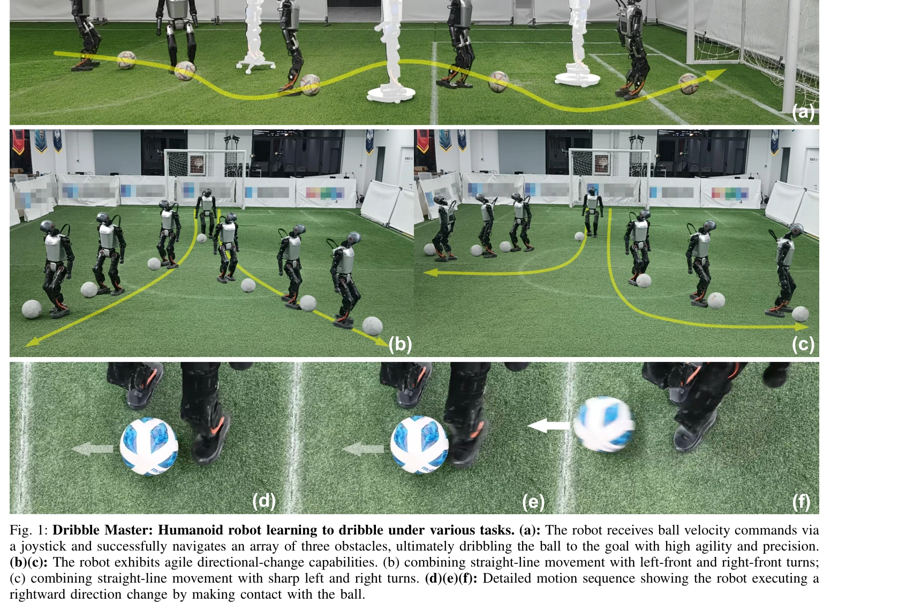
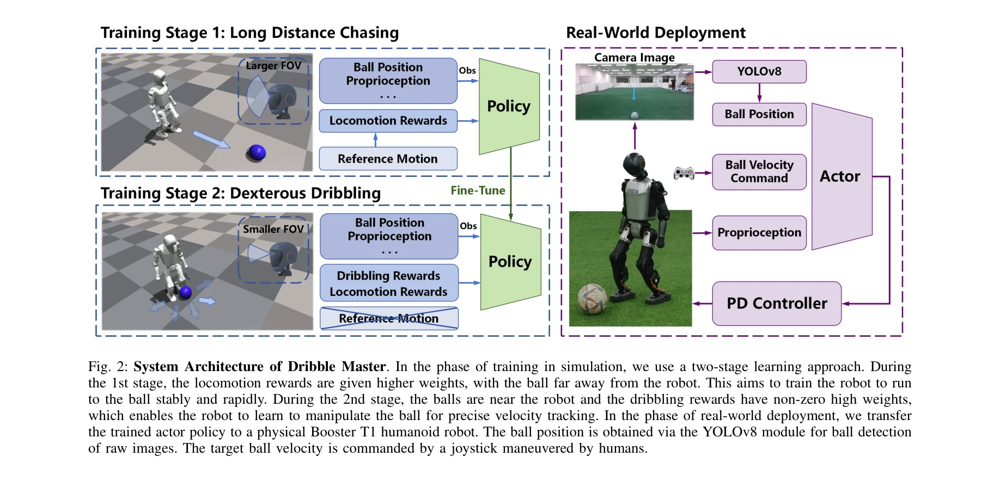

저자: Zhuoheng Wang, Jinyin Zhou, Qi Wu | 날짜: 2025-05-19 | URL: https://arxiv.org/abs/2505.12679

Fig. 1: Dribble Master: Humanoid robot learning to dribble under various tasks. (a): The robot receives ball velocity co
두 단계 curriculum learning과 virtual camera 모델을 이용하여 humanoid 로봇이 시뮬레이션에서 학습한 드리블링 정책을 실제 로봇에 성공적으로 전이하는 방법을 제안한다.
Fig. 1: Dribble Master: Humanoid robot learning to dribble under various tasks. (a): The robot receives ball velocity co

Fig. 2: System Architecture of Dribble Master. In the phase of training in simulation, we use a two-stage learning appro
총평: 본 논문은 humanoid 로봇의 지속적이고 민첩한 드리블링을 최초로 실현한 의미 있는 연구로, 현실적 시각 제약 모델링과 실제 로봇 전이 성공은 높은 가치가 있다. 다만 정량적 평가와 방법의 일반화 가능성 검증이 보강되면 더욱 완성도 있을 것이다.